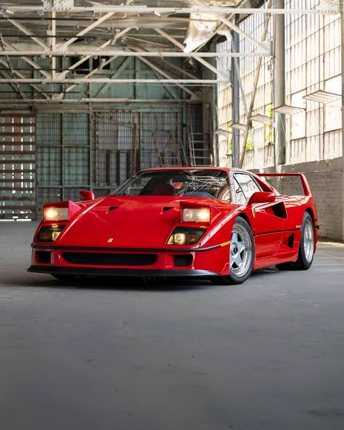
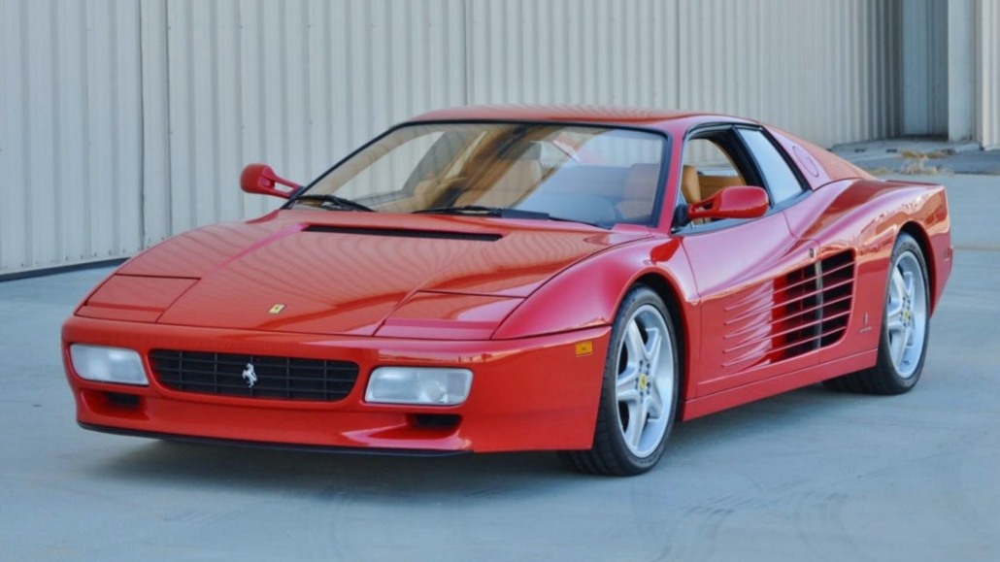
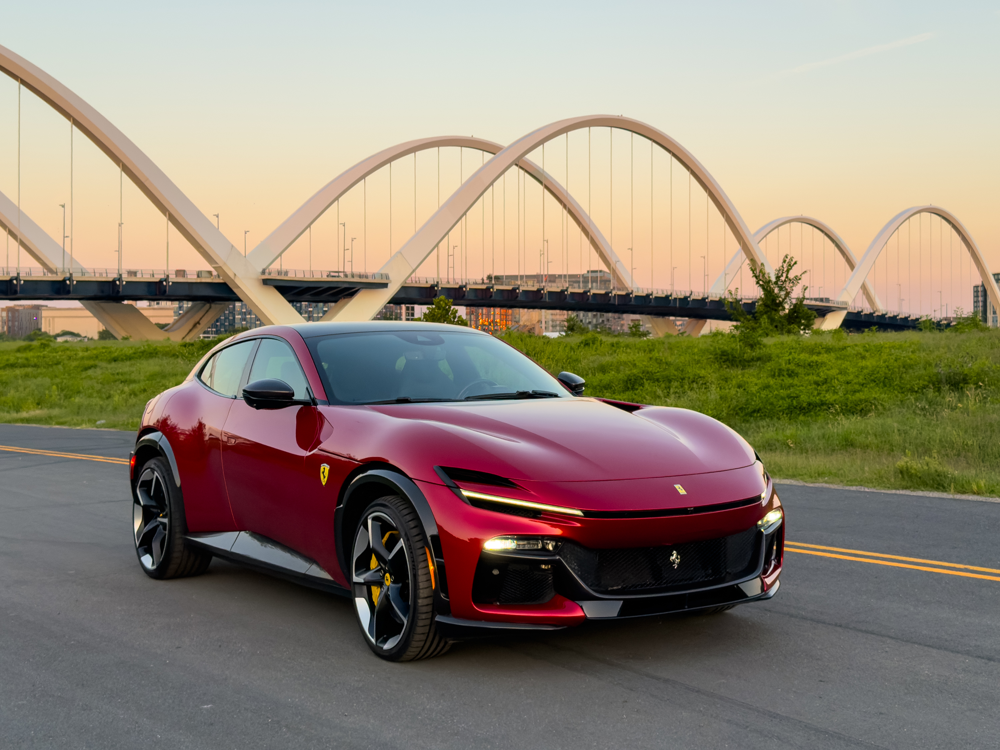

A última Ferrari aprovada por Enzo, feita para celebrar os 40 anos da marca.

O ícone dos anos 80, com doze cilindros e as entradas de ar laterais.

O primeiro Ferrari de quatro portas, com motor V12 de 725 cavalos.